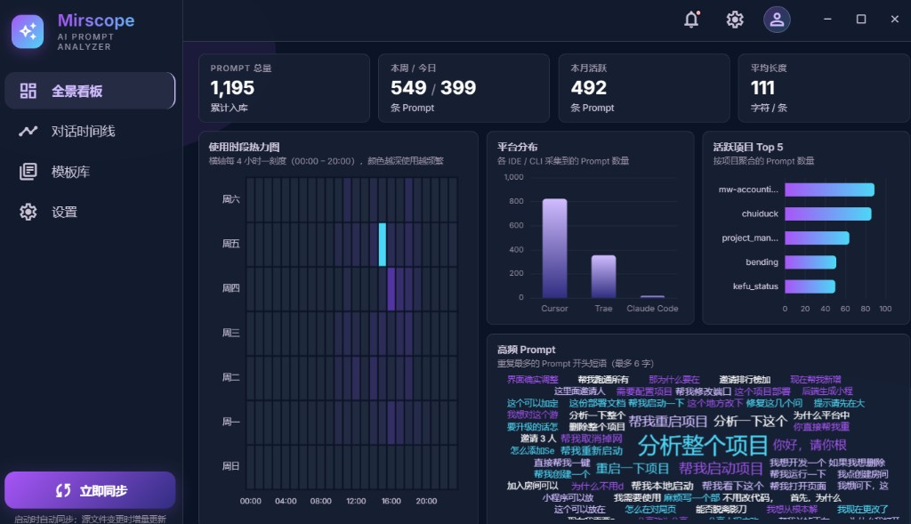
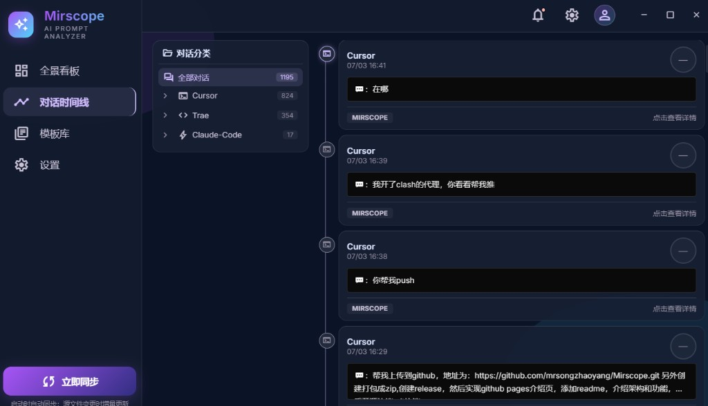
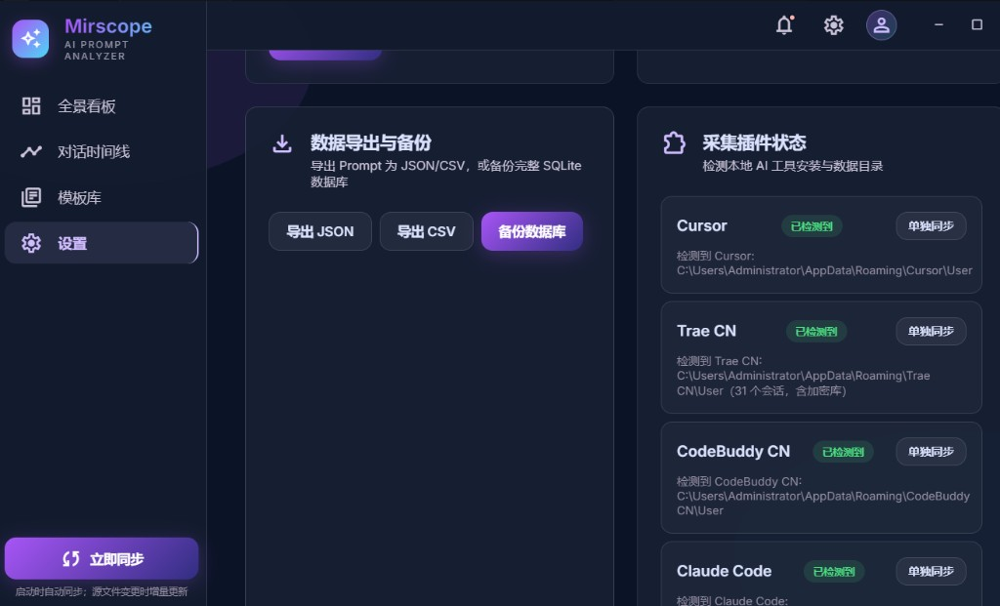

Dashboard 全景看板
热力图、平台分布、项目排行与高频短语，一眼看清「什么时候、用什么工具、问了什么」。
Local First · MIT License
Full Mirror, Full Insight
本地优先的 AI Prompt 全景分析平台。自动采集 Cursor、Trae CN、Claude Code 等 IDE 对话， 在本地完成统计、可视化与智能分析——完整映照你的 AI 使用习惯。
深色玻璃风格桌面端，开箱即用，数据全部留在本地。



热力图、平台分布、项目排行与高频短语，一眼看清「什么时候、用什么工具、问了什么」。
按平台与项目浏览历史 Prompt，支持项目画像与 AI 驱动的习惯分析。
沉淀高频 Prompt 模板，复用成熟句式，持续提升提问效率。
启动时全量同步，源文件变更时增量更新；内容级去重，重复同步不膨胀。
Prompt 评分、优化建议与项目 Playbook，调用用户自有模型 API。
数据默认仅存本地，API Key 加密存储，无强制云端上传。
自动检测本地安装路径，无需手动配置数据目录。
Windows 用户直接下载 Mirscope-Setup-*.exe 安装即可；开发者可克隆源码本地运行。
git clone https://github.com/mrsongzhaoyang/Mirscope.git
cd Mirscope
pnpm install
pnpm dev需要 Node.js ≥ 20、pnpm ≥ 9 · MIT License